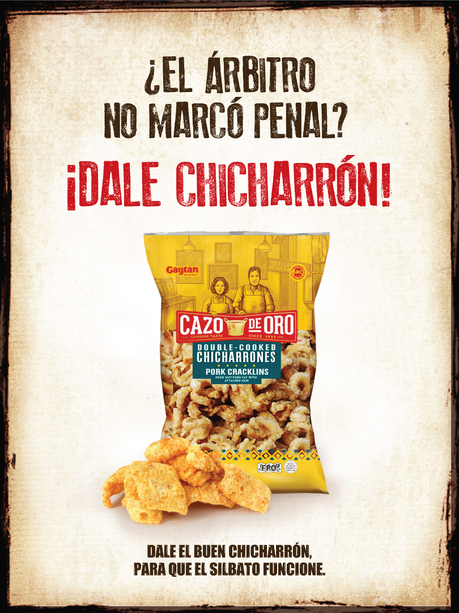
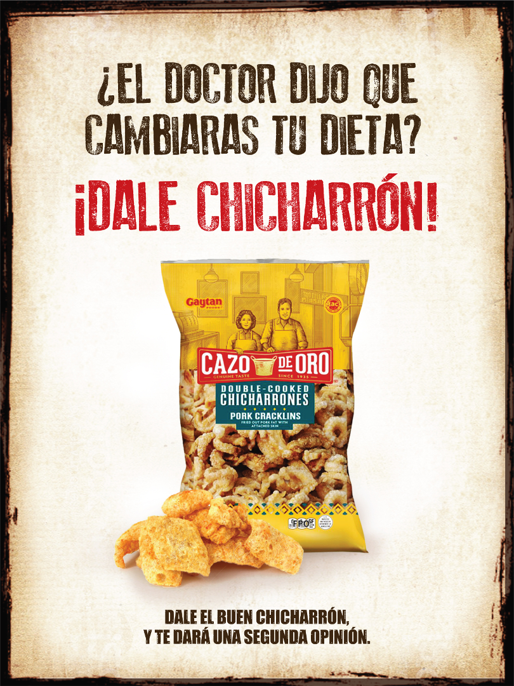
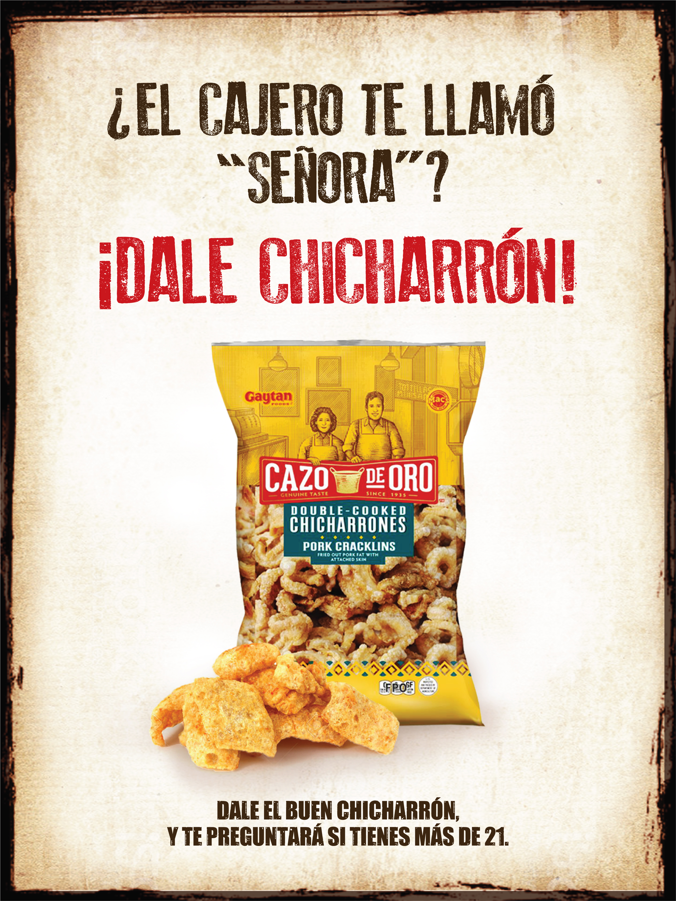
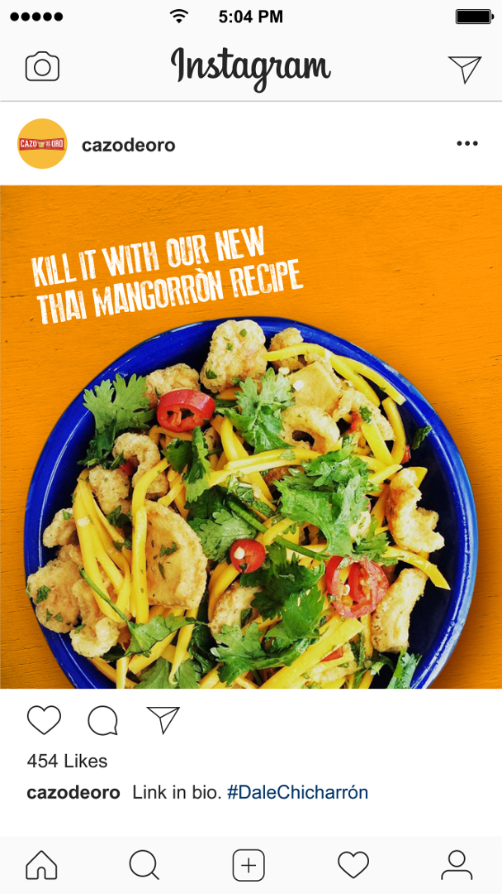
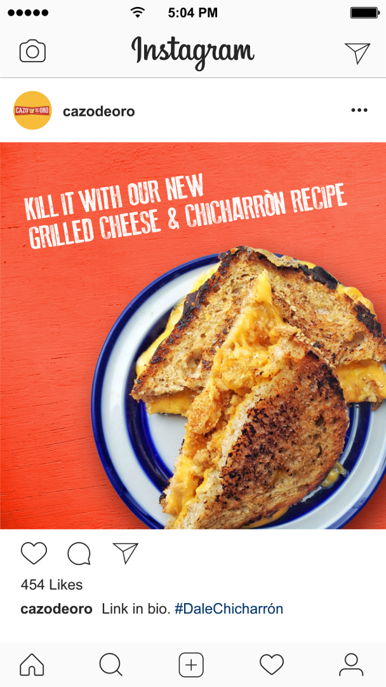
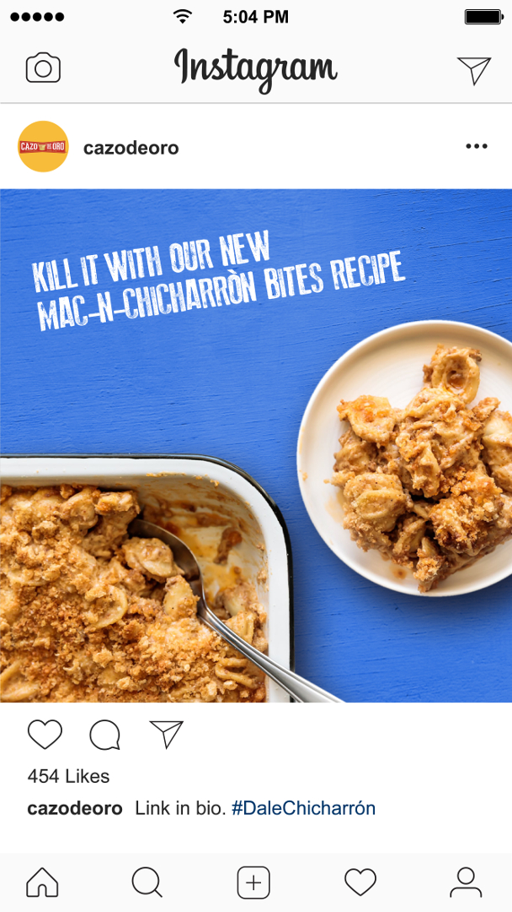

Cazo de Oro
“Dale chicharron.”
Literally: “Give him the pork rind.” In Mexican slang: “Take him out.”

Using this expression in a mix of Spanish and Spanglish ties the Cazo de Oro brand to its roots while introducing it to today’s Southern California Latinos as the solution to life’s everyday frustrations.
Posters



Social: recipe sharing


